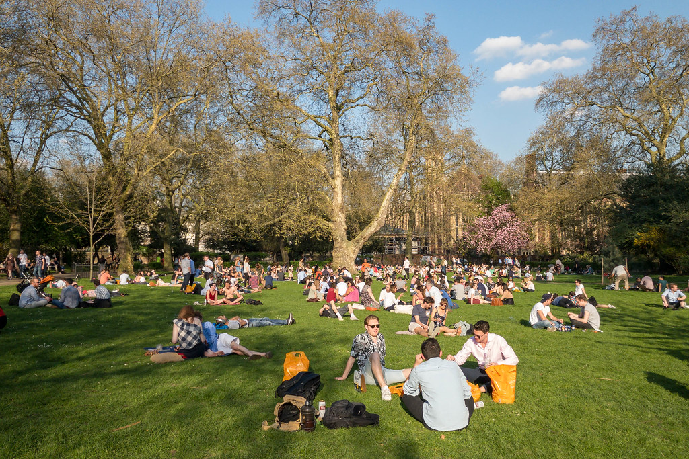

Discover Bellevue
Bellevue is home to several outdoor attractions that are fantastic for sightseeing and experiencing the Pacific Northwest. Located in downtown Bellevue is the 21 acre Bellevue Park that features a promenade lined with memorial benches and shade trees surrounding a stepped canel and a 240 foot waterfall. Located 2 miles east of Downtown Bellevue is the Bellevue Botanical Garden that displays gardens, meadows, wetlands and forests. The specific garden exhibits include an alpine rock garden, dahlia garden, fuchsia garden, the Yao Japanese garden among many others. The gardens offer guided tours, where visitors are instructed in healthy gardening and plant practices. The Bellevue Arts Museum is located directly east from the main entrance to Bellevue Square Mall where anyone can visit in a public forum to appreciate a diverse range of rotating exhibits.
Kelsey Creek Farm is located in between the Crossroads area and Downtown where visitors can see a window into the city's rural past. There are several hiking and jogging trails, picnic areas, creeks and forests. During the summer months near Larsen Lake, people will come from the surrounding area to pick fresh blueberries. People can also visit the Phantom Lake Loop, a 2.5 mile long paved pathway that circles Phantom Lake. If you travel 4 miles Southeast from Crossraods mall located directly on the shores of Lake Sammamish is Vasa Park Resort where people can camp, use the boat launch or swim in the lake. Probably best to wait for the summer months to get in the water.
South Bellevue known as the Factoria neighborhood has multiple outdoor activities that anyone will find exhilirating. In 2006, the Bellevue Challenge Course and Zip Tour opened as a partnership between Parks & Community Services and Northwest Teambuilding. The Zip Tour is located in an old Maple and Douglas Fir forest. There are also a few hiking trails that will take even the most seasoned hiker most of the day to experience even half there is to offer. The Coal Creek Natural Area is a 6 mile hike that takes you through the adjoining Cougar Regional Wildland Park and then there is the Enatai Beach Park located directly under the I90 floating bridge that features water activities such as swimming, seasonal canoe and kayak rentals, plus a view of Lake Washington.